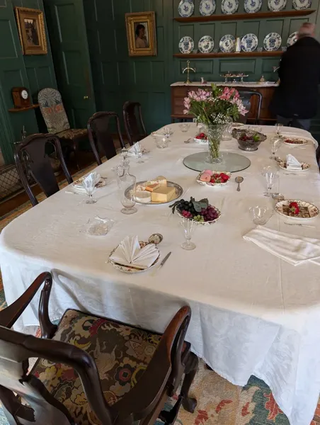
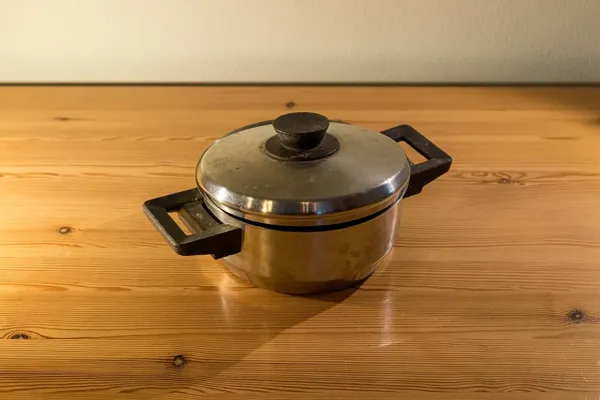
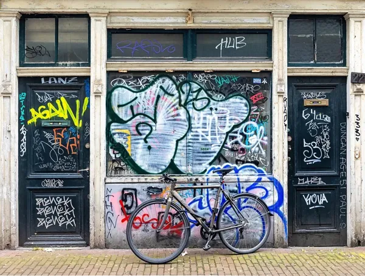
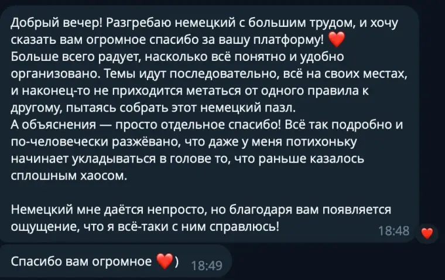

der, die, das: 50 слов с артиклем
Учи слово сразу вместе с артиклем, и потом не придётся угадывать. У каждого слова цветной артикль, картинка, чтение по-русски, перевод и озвучка.
Кодовое слово из ролика: АРТИКЛЬ



- 50слов с картинкой
- 3цвета: der, die, das
- 8вопросов в тесте
100+
учеников прошли наши разговорные клубы
Это люди, с которыми мы говорили по-немецки на клубах. Ниже — скриншоты сообщений учеников о платформе Stellas.




Как запомнить артикль
- 01
Слово только с артиклем
Не «Tisch», а der Tisch. Вслух, каждый раз.
- 02
Цвет
В карточках и тетради: der — синий, die — розовый, das — салатовый.
- 03
Окончания-подсказки
-ung — die, -chen — das, дни недели — der. Остальное учи с артиклем.
Угадываешь артикль через раз?
Знаешь слово Tisch, но не знаешь, der он или das, и вся фраза рассыпается: от артикля зависят окончания в каждом падеже. В Stellas 7500+ слов с аудио и транскрипцией, а карточки с интервальным повторением возвращают слово вместе с артиклем, пока оно не запомнится.
Купить Stellas за 30 €Подготовка к экзамену внутри
Артикли и окончания проверяют в письменной части любого экзамена: ошибка в роде тянет за собой ошибку в падеже. В платформе есть отдельный блок по экзаменам: формат, типичные ошибки, шаблоны писем и устной части.
- 120гайдов Goethe
- 89гайдов telc и DTZ
- 60гайдов ÖSD
- 40пробных тестов с разбором
- Lesen
- Hören
- Schreiben
- Sprechen
«Мои ошибки» собирает вопросы, на которых ты ошибся, чтобы повторить их перед экзаменом.
Цена: один раз и навсегда
Обе вместе (2)
Stellas · A0–C1- 340+ гайдов A0–C1
- 7500+ слов с аудио и транскрипцией
- фильмы, книги, подкасты по уровням
- трекер и повторения в Notion, офлайн
- 269 гайдов к экзаменам, 40 пробников
- бонус: A0–A2 на украинском
40 €30 €
Частые вопросы
(01)Есть ли правило, как узнать артикль?
Для части слов — да: -ung, -heit, -keit — die, -chen — das, дни и месяцы — der. Для большинства слов правила нет, поэтому слово учат сразу с артиклем.
(02)Почему das Mädchen, если это девочка?
Окончание -chen всегда делает слово среднего рода. Грамматический род не всегда совпадает с полом.
(03)Какой артикль во множественном числе?
Всегда die: die Tische, die Türen, die Bücher. Меняется само слово, поэтому множественное число тоже стоит учить.
(04)Зачем чтение по-русски?
Чтобы на старте не бояться слова. Чтение приблизительное: настоящее звучание — по кнопке озвучки.